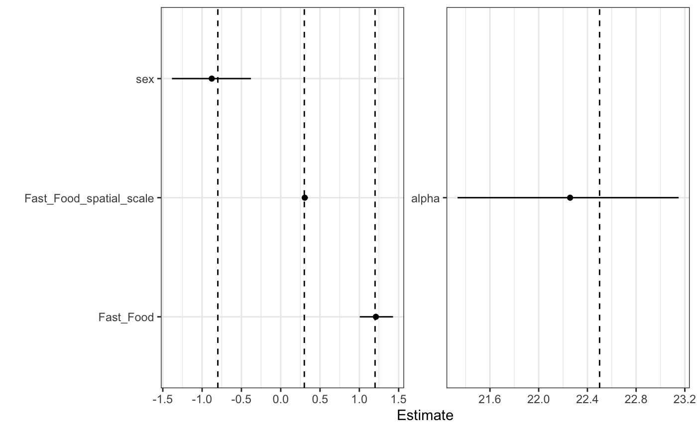
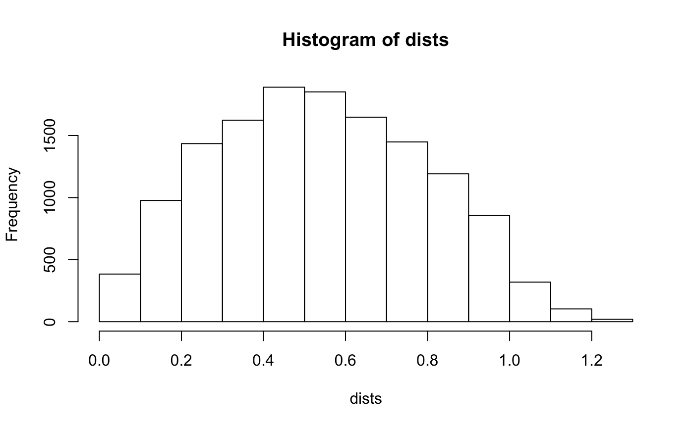
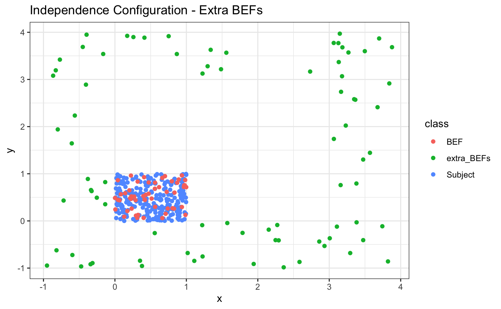
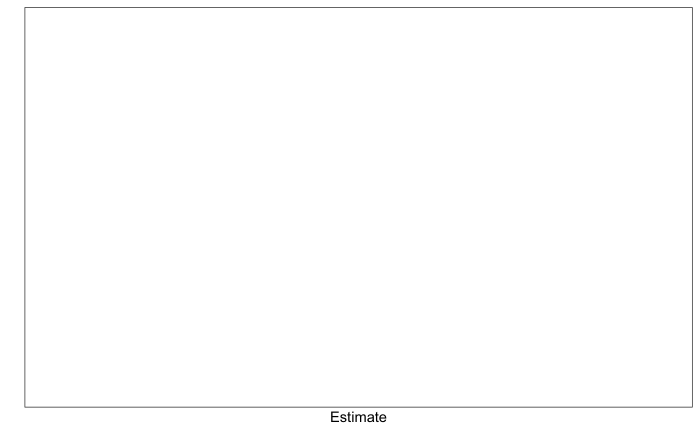

STAP Introduction
Adam Peterson
Introduction.RmdMotivation
The purpose of this document is to show how to use the rstap package including the modeling assumptions and the kind of data it uses. We’ll begin by loading in the appropriate libraries which include dplyr and tidyr for data manipulation, ggplot2 for plotting and rstap for model fitting.
A typical data structure will involve subjects and features at different locations and/or times. For purposes of this example, we simulate 550 subjects and 55 features uniformly in a 1x2 and 3x3 grid, respectively. We’ll assume we’re modeling the BMI of the subjects as a function of Fast Food Restaurants (FF) in their surrounding area.
set.seed(1214)
num_subj <- 2.5E2
num_bef <- 55
sub_df <- tibble(x = runif(n = num_subj, min = 0, max = 1.0),
y = runif(n = num_subj, min = 0, max = 1.0),
class = "Subject")
bef_df <- tibble(x = runif(n = num_bef, min = 0, max = 1.0),
y = runif(n = num_bef, min = 0, max = 1.0),
class = "BEF")
rbind(sub_df,bef_df) %>% ggplot(aes(x = x, y = y, color = class )) +
geom_point() + theme_bw() + ggtitle("Independence Configuration") +
scale_colour_grey() + theme(legend.title = element_blank(),
text = element_text(size = 22))rstap models data assuming the relationship between the mean and the covariates is the following:
\[
E[BMI_i] = \alpha + Sex_i \delta + FF_i(\theta)\beta\\
X_i(\theta) = \sum_{d \in \mathcal{D}_i} \mathcal{K}_s(\frac{d}{\theta})
\] Where \(\mathcal{K}_s\) is a real-valued function such that \(\mathcal{K}_s:[0.\infty] \to [0,1]\). Furthermore, we have \(\mathcal{K}_s\) either monotonically decreasing or increasing depending on whether one is modeling a spatial or temporal relationship between the features and subjects, respectively. The default weight function for a spatial decay function in the rstap package is the complementary error function, though others are available. For examples of others in use in the rstap package see the Mis-Specified Weight Function vignette.
For this example we use the following fixed parameters to simulate our dataset:
alpha <- 22.5 ## Average BMI for men with no FF exposure
Z <- rbinom(n = num_subj, prob = .45, size = 1) ## sex in this setting
delta <- -.8 ## Sex effect
theta <- .3 ## Spatial scale
theta_2 <- 3 ## for later
beta <- 1.2 ## Fast Food Effect
sigma <- 2.3 ## Residual Noisesupposing we use all the features simulated in the space, then this results in the following dataset, with the following marginal distribution of the outcome, \(y\).
dists <- fields::rdist(as.matrix(sub_df[,1:2]),
as.matrix(bef_df[,1:2]))
X <- apply(dists,1,function(x) sum(pracma::erfc(x/theta)))
BMI <- alpha + Z*delta + X*beta + rnorm(n = num_subj, mean = 0, sd = sigma)
data_frame(BMI = BMI) %>% ggplot(aes(x=BMI)) + geom_density() + theme_bw() +
ggtitle("Marginal Distribution of Outcome") + theme(text = element_text(size = 22))
#> Warning: `data_frame()` is deprecated, use `tibble()`.
#> This warning is displayed once per session.
The exposure decay function and histogram of the standardized exposure is as follows
d <- seq(from = 0, to = max(dists), by = 0.01)
X_theta_one <- pracma::erfc(d/theta)
p1 <- tibble(Distance = d,
Exposure = X_theta_one) %>% ggplot(aes(x=Distance,y=Exposure)) + geom_line() +
theme_bw() + scale_colour_grey() + ggtitle("Simulated Spatial Distance Decay") +
xlab("Distance") + theme(text = element_text(size=22))
p2 <- tibble(Exposure = X) %>% ggplot(aes(x=Exposure)) + geom_histogram() +
theme_bw() + scale_colour_grey() + xlab("Aggregated Exposure") +
ggtitle("Spatial Aggregated Exposure Distribution") +
theme(text = element_text(size=22))
grid.arrange(p1,p2,nrow=1)
#> `stat_bin()` using `bins = 30`. Pick better value with `binwidth`.
We then set-up the two dataframes needed for stap to model these data. The first is a fairly typical data frame with the outcome, covariates and subject ID. This is the same kind of dataset that could be used with a function like lm()
subject_data <- data_frame(subj_id = 1:num_subj,
BMI = BMI,
sex = factor(Z,labels=c("M","F")))
subject_data %>% head() %>% knitr::kable()| subj_id | BMI | sex |
|---|---|---|
| 1 | 25.13904 | M |
| 2 | 28.14755 | M |
| 3 | 29.03859 | M |
| 4 | 29.58273 | F |
| 5 | 30.30569 | F |
| 6 | 30.60156 | F |
The distance dataframe contains the corresponding subject id to pair with each built environment feature in the chosen space along with their associated distance. Note that the Built Environment Features are labeled as “Fast_Food” for this example - this will be important syntactically for the stap_glm() function.
distance_data <- dists %>% as_tibble() %>%
mutate(subj_id = 1:num_subj) %>%
gather(contains("V"),key = 'BEF',value = 'Distance') %>%
mutate(BEF = 'Fast_Food')
#> Warning: `as_tibble.matrix()` requires a matrix with column names or a `.name_repair` argument. Using compatibility `.name_repair`.
#> This warning is displayed once per session.
distance_data %>% head() %>% knitr::kable()| subj_id | BEF | Distance |
|---|---|---|
| 1 | Fast_Food | 0.3090334 |
| 2 | Fast_Food | 0.1461124 |
| 3 | Fast_Food | 0.7505497 |
| 4 | Fast_Food | 0.6547669 |
| 5 | Fast_Food | 0.2206448 |
| 6 | Fast_Food | 0.3910711 |
These data are then modeled with rstap in the following manner - note the placement of “Fast_Food” and sap(), designating the rows labeled as Fast_Food in the distance_data as the appropriate ones to model as Spatial Aggregated Predictor with these data. Note that we sample the posterior with 4 chains for 2000 iterations here. This is very conservative and fewer samples/chains could be used when first fitting a model to make sure the sampler is functioning appropriately.
fit <- stap_lm(formula = BMI ~ sex + sap(Fast_Food),
subject_data = subject_data,
distance_data = distance_data,
subject_ID = 'subj_id',
prior = normal(location = 0, scale = 5,autoscale = F),
prior_intercept = normal(location = 25, scale = 5, autoscale = F),
prior_stap = normal(location = 0, scale = 3, autoscale = F),
prior_theta = log_normal(location = 1, scale = 1),
prior_aux = cauchy(location = 0,scale = 5),
max_distance = max(dists),
chains = 4, iter = 2E3, cores = 4) ## include all dataWe’ll first look at the quick summary contained in the model’s print-out
fit
#> stap_lm
#> family: gaussian [identity]
#> formula: BMI ~ sex + sap(Fast_Food)
#> observations: 250
#> Intercept: TRUE
#> fixed predictors: 1
#> spatial predictors: 1
#> temporal predictors: 0
#> spatial-temporal predictors: 0
#> ------
#> Median MAD_SD
#> (Intercept) 22.3 0.5
#> sexF -0.9 0.3
#> Fast_Food 1.2 0.1
#> Fast_Food_spatial_scale 0.3 0.0
#>
#> Auxiliary parameter(s):
#> Median MAD_SD
#> sigma 2.5 0.1
#>
#> Sample avg. posterior predictive distribution of y:
#> Median MAD_SD
#> mean_PPD 28.6 0.2
#>
#> ------
#> * For help interpreting the printed output see ?print.stapreg
#> * For info on the priors used see ?prior_summary.stapregFurther model details, including diagnostics concerning convergence properties can be found by using the summary function:
summary(fit)
#>
#> Model Info:
#>
#> function: stap_lm
#> family: gaussian [identity]
#> formula: BMI ~ sex + sap(Fast_Food)
#> priors: see help('prior_summary')
#> sample: 4000 (posterior sample size)
#> observations: 250
#> Spatial Predictors: 1
#>
#> Estimates:
#> mean sd 2.5% 25% 50% 75% 97.5%
#> (Intercept) 22.3 0.5 21.2 21.9 22.3 22.6 23.3
#> sexF -0.9 0.3 -1.5 -1.1 -0.9 -0.7 -0.3
#> Fast_Food 1.2 0.1 1.0 1.1 1.2 1.3 1.5
#> Fast_Food_spatial_scale 0.3 0.0 0.3 0.3 0.3 0.3 0.4
#> sigma 2.5 0.1 2.3 2.4 2.5 2.5 2.7
#> mean_PPD 28.6 0.2 28.1 28.4 28.6 28.7 29.0
#> log-posterior -590.6 1.6 -594.4 -591.4 -590.3 -589.4 -588.5
#>
#> Diagnostics:
#> mcse Rhat n_eff
#> (Intercept) 0.0 1.0 5829
#> sexF 0.0 1.0 5659
#> Fast_Food 0.0 1.0 5213
#> Fast_Food_spatial_scale 0.0 1.0 5636
#> sigma 0.0 1.0 4542
#> mean_PPD 0.0 1.0 4643
#> log-posterior 0.0 1.0 1781
#>
#> For each parameter, mcse is Monte Carlo standard error, n_eff is a crude measure of effective sample size, and Rhat is the potential scale reduction factor on split chains (at convergence Rhat=1).Checking our estimates, the model captures the true values very well. 
One typical way to check for model goodness-of-fit is via posterior predictive checks. These are available here via the posterior_predict function and the ppc_dens_overlay function from the bayesplot package.
pps <- posterior_predict(fit,draws = 50,seed = 34234)
#> Warning in sweep(eta, 2L, offset, `+`): STATS is longer than the extent of
#> 'dim(x)[MARGIN]'
bayesplot::ppc_dens_overlay(y = subject_data$BMI,
yrep = pps) + ggtitle("Posterior Predictive Samples")
We’ll take this as sufficient evidence (for this vignette) that the model works. Further model evaluation can be found in a different vignette, to be added later. Let’s now examine the case when we mis-specify the inclusion distance or superflous data is included.
Mis-Specified Inclusion Distance
While there are tools, such as the dlm package, that can provide an investigator with a sense of what appropriate inclusiong distance to set, it is still worth considering what may occur if the inclusion distance is mis-specified. The following section considers this in two cases of data exclusion: non-informative, and informative.
Non-Informative data excluded
Note that the histogram of distances include many over 1 unit - which from the above graph we know only add “negligible” information.

Keeping this in mind - let’s see what happens to our estimates when we set the exclusion distance to be 1.25 miles.
fit_125 <- stap_lm(BMI ~ sex + sap(Fast_Food),
subject_data = subject_data,
distance_data = distance_data,
subject_ID = 'subj_id',
prior = normal(location = 0,scale = 5,autoscale = F),
prior_intercept = normal(location = 25, scale = 5, autoscale = F),
prior_stap = normal(location = 0, scale = 3, autoscale = F),
prior_theta = log_normal(location = 1, scale = 1),
prior_aux = cauchy(location = 0,scale = 5),
max_distance = 1.25, chains = 4, iter = 2E3, cores = 4)We excluded about half of the total data (not exactly even across individuals)
and yet the estimates are still very good 
Informative data excluded
Now let’s see what happens when we mis-specify the maximum distance and this results in a loss of “meaningful” Built Environment Features.
fit_25 <- stap_glm(BMI ~ sex + sap(Fast_Food), subject_data = subject_data,
distance_data = distance_data,
family = gaussian(link = 'identity'),
subject_ID = 'subj_id',
prior = normal(location = 0,scale = 5,autoscale = F),
prior_intercept = normal(location = 25, scale = 5, autoscale = F),
prior_stap = normal(location = 0, scale = 3, autoscale = F),
prior_theta = log_normal(location = 1, scale = 1),
prior_aux = cauchy(location = 0,scale = 5),
max_distance = .25, chains = 1, iter = 6E2) We can now see that our spatial scale and the corresponding effect are biased 
The shift in estimate, in addition to increased noise, is to be expected since we’re increasingly missing informative data for our spatial parameter.
Extreme Missing data
To show the consequences of using an extreme inclusion distance - extreme with respect to the true terminal inclusion distance - we simulate the data under an alternate scale. Note that the following exposure curve does not even terminate at the maximum distance between a “Fast Food” store and a subject.
d <- seq(from = 0, to = max(dists), by = 0.01)
X_theta_one <- pracma::erfc(d/theta_2)
plot(d,X_theta_one,type='l',main = "Exposure Decay Function", xlab = "Distance",
ylab = "Exposure",ylim = c(0,1))Fitting the model on a reduced domain of distances from the terminating distance,results in an highly inflated estimate of the spatial scale, as the posterior will attempt to approximate the second graph shown below - an exposure relationship that is approaching uniform on the domain of distances “observed”.
plot(d,X_theta_one,type='l',main = "Exposure Decay Function - reduced domain", xlab = "Distance",
ylab = "Exposure",ylim = c(0,1), xlim = c(0,.5))
Simulating a dataset under this model and fitting an rstap model to it with the restricted domain…
dists <- fields::rdist(as.matrix(sub_df[,1:2]),
as.matrix(bef_df[,1:2]))
X <- apply(dists,1,function(x) sum(pracma::erfc(x/theta_2)))
## center and scale the exposure effect for ease of exposition/numerical stability
X_tilde <- (X-mean(X))/sd(X)
BMI <- alpha + Z*delta + X_tilde*beta + rnorm(n = num_subj, mean = 0, sd = sigma)
subject_data_unif <- data_frame(subj_id = 1:num_subj,
BMI = BMI,
sex = factor(Z,labels=c("M","F")))
fit_unif <- stap_glm(BMI ~ sex + sap(Fast_Food),
subject_data = subject_data_unif,
distance_data = distance_data,
family = gaussian(link = 'identity'),
subject_ID = 'subj_id',
prior = normal(location = 0,scale = 5,autoscale = F),
prior_intercept = normal(location = 25, scale = 5, autoscale = F),
prior_stap = normal(location = 0, scale = 3, autoscale = F),
prior_theta = log_normal(location = 1, scale = 1),
prior_aux = cauchy(location = 0,scale = 5),
max_distance = .25, chains = 4, iter = 2E3,cores = 4) We can see a much wider estimate of the scale parameter, and the corresponding effect is biased down from where it should be. 
Here is a plot of the estimate on the full domain of the data - we can see that the exposure function approximation becomes less accurate on the set of distances not included in the model.

As can be seen below, the approximation is quite good on the reduced domain, but the reduced number of distances results in a wider uncertainty interval, and the constrained domain results in an inflated estimate. The take home lesson here being, that if the effect of some BEF extends out a certain distance, but you don’t have data at that distance, your estimate will become biased to reflect the spatial exposure curve under the distances observed.

Inclusion of superflous data
If additional fast food restaurants were included, beyond that which were truly “needed”", what would happen to our model estimates? Is this equivalent to the non-informative data exclusion?

dists <- fields::rdist(as.matrix(sub_df[,1:2]),
as.matrix(rbind(bef_df[,1:2],extra_befs[,1:2])))
distance_data <- dists %>% as_tibble() %>%
mutate(subj_id = 1:num_subj) %>%
tidyr::gather(contains("V"),key = 'BEF',value = 'Distance') %>%
mutate(BEF = 'Fast_Food')
fit <- stap_lm(formula = BMI ~ sex + sap(Fast_Food),
subject_data = subject_data,
distance_data = distance_data,
subject_ID = 'subj_id',
prior = normal(location = 0, scale = 5,autoscale = F),
prior_intercept = normal(location = 25, scale = 5, autoscale = F),
prior_stap = normal(location = 0, scale = 3, autoscale = F),
prior_theta = log_normal(location = 0, scale = 1),
prior_aux = cauchy(location = 0,scale = 5),
max_distance = max(dists),
chains = 4, cores = 4, iter = 2E3) ## including unneccessary data
Our model is still able to recover the estimates correctly - about as well as it did in the typical model setting! This is because the additional distances only contribute an negligible effect under the true spatial scale.
Caveats
It is important to note the limitations of these simulations. To begin with, the exposure covariate \(\tilde{X}\) is an unknown function of the distances between the subjects and the businesses and the spatial scale. Thus these simulations do not represent the probably more realistic scenarios in which:
The decay function is mis-specified or
Multiple built-environment features are of interest.
These will be the subject of future vignettes.